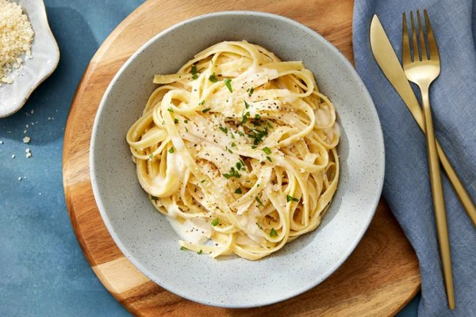

Only Recipes
to matter

Fettuccine
Fettuccine is a classic Italian pasta dish made with fettuccine noodles and a creamy sauce.
It's a simple yet indulgent dish, loved for its comforting texture and flavor.
- 1.5 pounds dry Fettuccine Pasta
- 3/4 pint of Heavy Cream
- 1 cup of Butter
- 1 dash Garlic Salt
- 1 cup of grated Parmesan Cheese
- Salt & Pepper to taste
- Bring a large pot of lightly salted water to a boil.
- Add fettuccine pasta and cook for 8 to 10 minutes or until al dente; drain.
- Melt butter into cream in a large saucepan over low heat; add salt, pepper, and garlic salt.
- Increase the heat to medium; stir in grated Parmesan cheese until melted and sauce has thickened.
- Add cooked pasta to sauce and toss until thoroughly coated; serve immediately.
Back